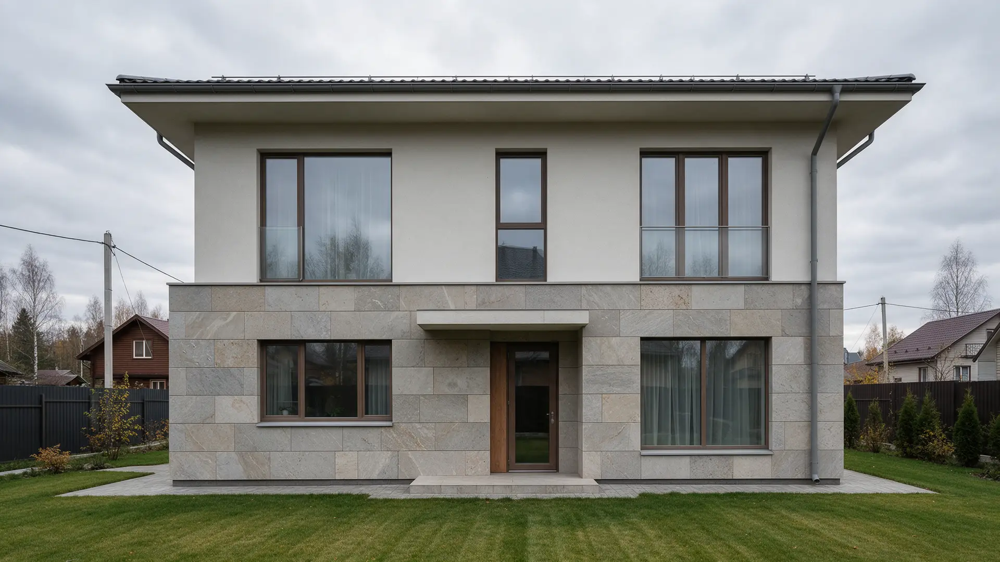
Монтаж изделий из натурального камня по всей России
Столешницы, подоконники, лестницы, мойки, ванные, полы и стены
Фасады, входные группы, перила и балясины
Работаем по всей России, на замер приезжаем на объект
Внутри дома и снаружи
Два направления, один подрядчик. По фото и размерам назовём ориентир за м², погонный метр или штуку, чтобы вы понимали бюджет ещё до замера.

Интерьер
Всё, что трогают руками каждый день: здесь важны точная кромка, ровные стыки и рисунок камня.
- Столешницыуточнить
- Подоконникиуточнить
- Лестницыуточнить
- Мойкиуточнить
- Ванные комнатыуточнить
- Полыуточнить
- Стеныуточнить
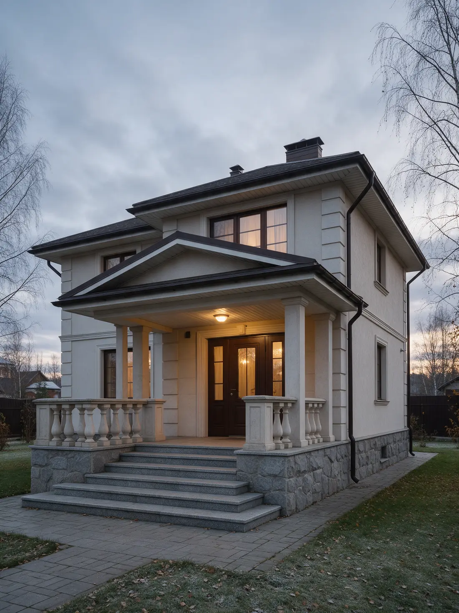
Улица
Камень, который стоит под снегом и дождём: здесь важны порода, крепёж и водоотвод.
- Фасадыуточнить
- Входные группыуточнить
- Перилауточнить
- Балясиныуточнить
Цена зависит от камня, толщины, обработки кромки и того, что окажется на месте: основание, подходы, высота. Поэтому по фото называем ориентир, а точную смету – после замера. После подписания договора смета не меняется.
Одна столешница. Три камня.
Гранит
Самый твёрдый из четырёх. Не боится ножа, горячей кастрюли и воды, почти не впитывает. Идёт и в дом, и на улицу: ступени, цоколь, подоконники.
Столешница, погонный метр: уточнитьМрамор
Мягкий рисунок прожилок. Камень мягче гранита: лимон и вино оставляют следы, поэтому поверхность пропитываем. Хорош в ванной, на стенах и лестницах.
Столешница, погонный метр: уточнитьКварцит
Выглядит как мрамор, работает как гранит. Твёрдый и плотный, рисунок тёплыми волнами. Для кухни, где готовят каждый день.
Столешница, погонный метр: уточнитьНаши работы
Камень в квартирах, домах и на улице: ванные, подоконники, полы, ступени, перила, фасады.
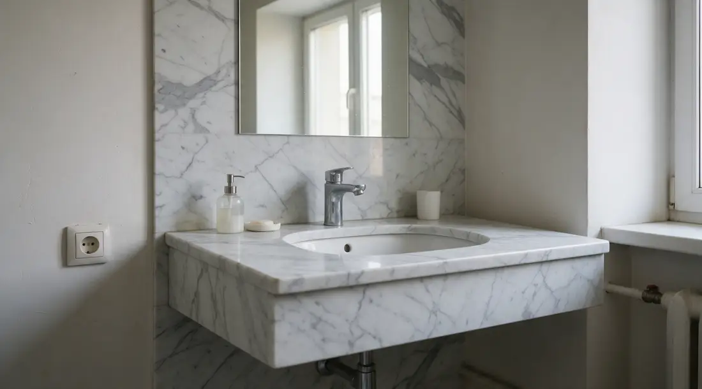
Ванная
Мрамор, столешница и стена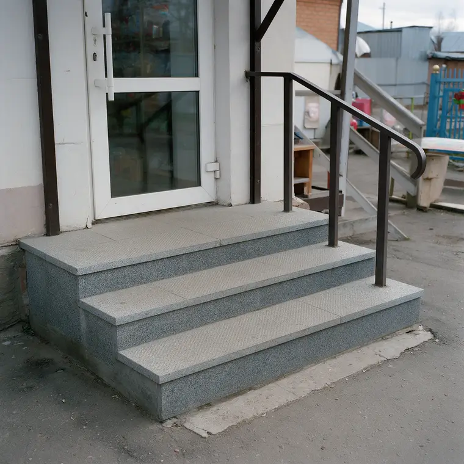
Входная группа
Гранит, ступени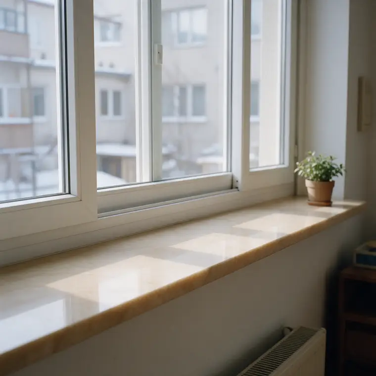
Подоконник
Бежевый камень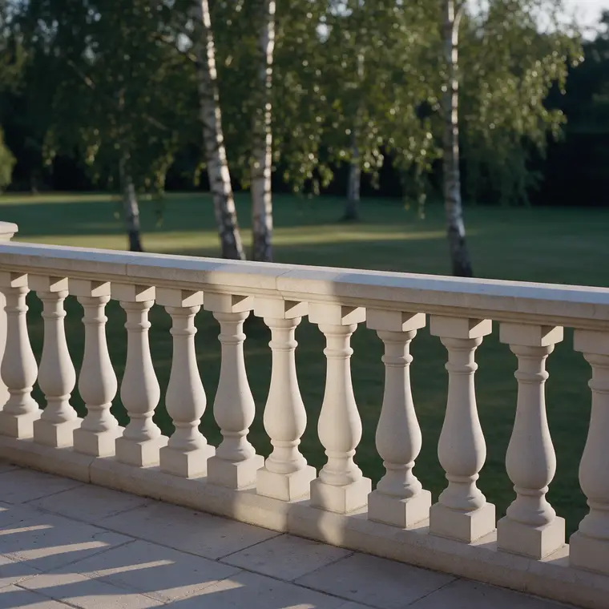
Перила и балясины
Терраса дома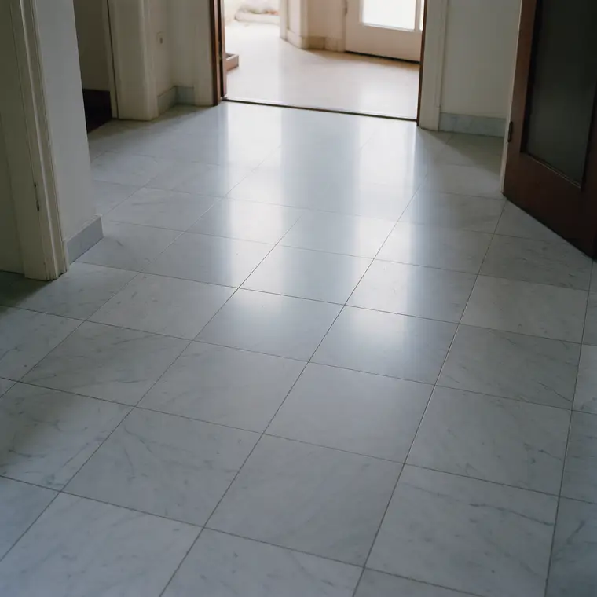
Пол
Мрамор, прихожая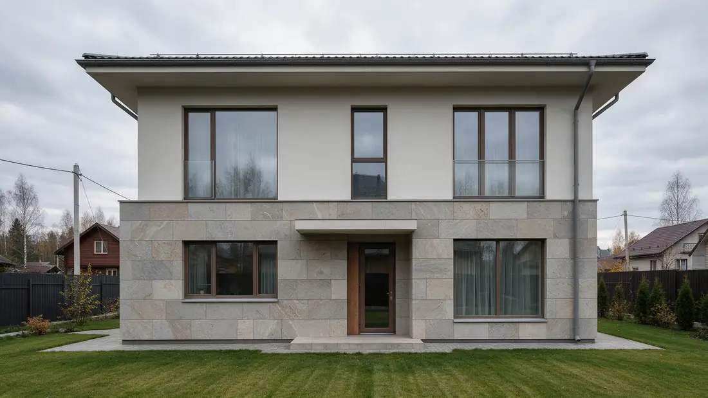
Фасад
Облицовка первого этажа
Камень для дома и для улицы
Один и тот же камень ведёт себя по-разному на кухне и на крыльце. Поэтому для каждой задачи своя порода, обработка и крепёж.
Внутри: точная кромка
Кромку обрабатываем по месту: фаска, скругление или прямой срез. Края без сколов, вырезы под мойку и варочную панель по шаблону.
Стыки: рисунок продолжается через шов
Плиты раскладываем до распила, чтобы прожилки шли дальше через стык. Шов подбираем в цвет камня.
Улица: камень и монтаж под наш климат
Для ступеней и цоколя – камень, который почти не впитывает воду, и шероховатая поверхность, чтобы зимой не скользило. Облицовку крепим так, чтобы вода не стояла за плитой.
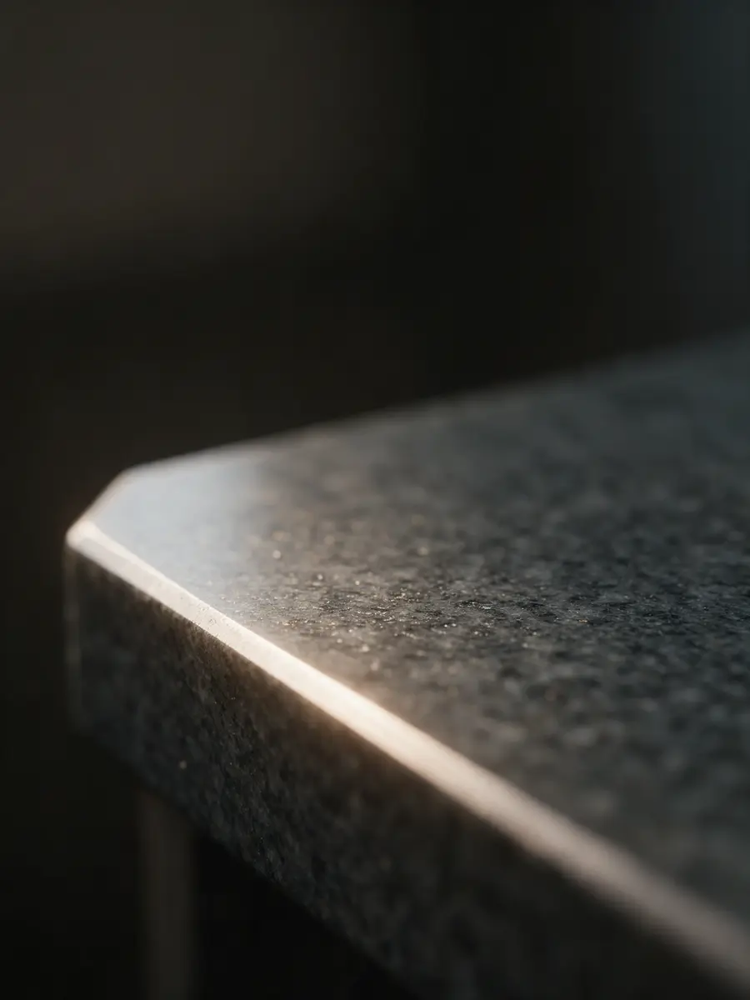
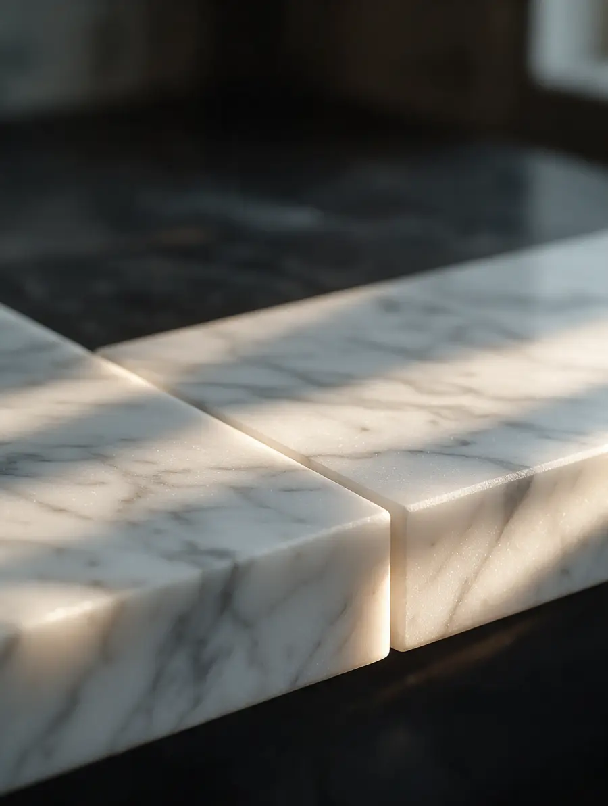
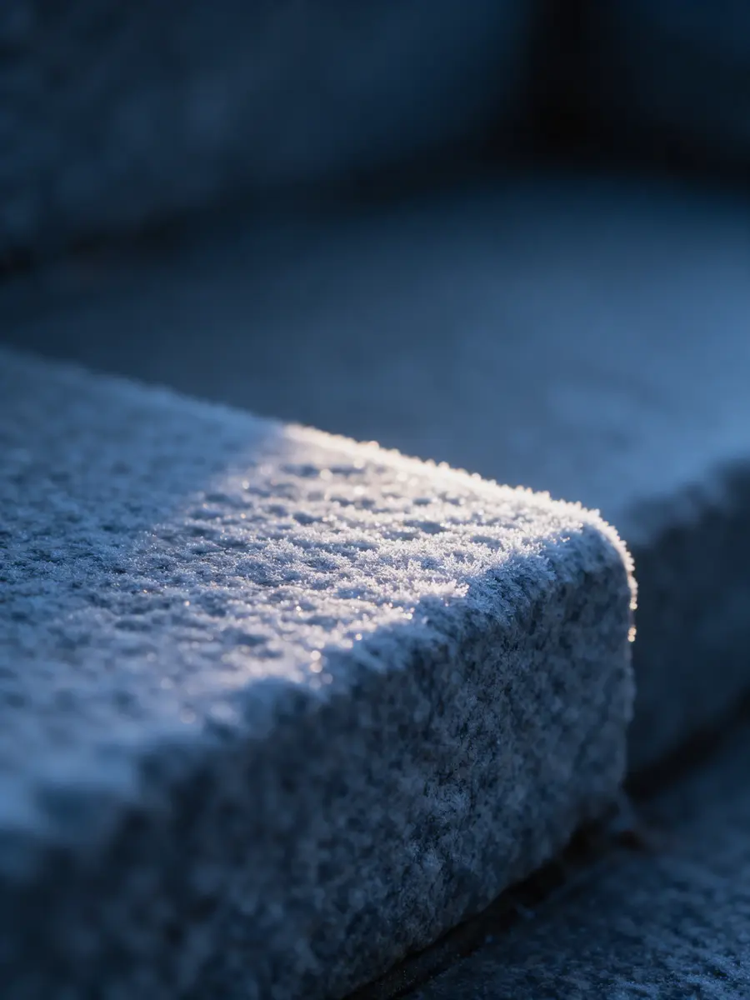
Где монтаж камня обычно ломается
Камень дорогой, и ошибку в нём не закрасишь. Семь промахов, после которых зовут переделывать или спорят о деньгах, и как мы их не допускаем.
Назвали одну цену, а после замера – совсем другую
Честно говорим: по фото можно назвать только ориентир. Что может его изменить – основание, подходы, нестандартные вырезы, другой камень – называем сразу. Точную смету даём после замера и вносим в договор: после подписания она не меняется.
Привезли не тот камень, что на фото
У натурального камня каждая плита своя. До распила показываем вам именно ваши плиты, вживую или на фото, и только после согласия режем.
Скол при перевозке или монтаже
Плиты везём стоя, в защите по кромке, заносим на присосках и такелажных ремнях. Вырезы и кромки обрабатываем так, чтобы на месте осталась только подгонка.
Стык посреди столешницы и разный рисунок
Стык уводим под мойку или в угол, плиты подбираем по рисунку, шов шлифуем и подкрашиваем в цвет камня.
Уложили неровно, через год пошли трещины
Под камень выводим основание в уровень и кладём на клей для натурального камня, без пустот. Пол и ступени проверяем уровнем по всей площади.
Облицовка отвалилась после первой зимы
Вода за плитой замерзает и отрывает камень. На фасаде и цоколе ставим механический крепёж вместе с морозостойким клеем, делаем отливы и швы, через которые вода уходит.
Перила шатаются
Каждую балясину сажаем на металлический штырь в основание и поручень, а не только на клей. Перила проверяем рукой при сдаче.
Камень прощает многое, кроме спешки при монтаже.
Как заказать
Пять шагов от заявки до готового изделия. Ориентир цены – по фото, точная смета – после замера. После подписания договора смета не меняется.
- 1
Заявка
Пишете или звоните: что нужно, где и примерные размеры. Подойдут фото места и замеры рулеткой. В ответ – ориентир цены за м², погонный метр или штуку.
- 2
Замер
Приезжаем на объект, снимаем точные размеры, смотрим основание и подходы, чтобы занести плиты без риска.
- 3
Точная смета и договор
Считаем по замеру: камень, обработку кромки, вырезы и монтаж. Всё, что входит в цену, видно в смете. Смету вносим в договор, и после подписания она не меняется.
- 4
Подбор камня и изготовление
Показываем ваши плиты до распила, раскладываем рисунок, режем и обрабатываем кромку.
- 5
Монтаж
Привозим, ставим, выводим швы и проверяем уровень. Сдаём изделие, когда вы его осмотрели.